人员入离流程说明
|
流程 |
说明 |
执行部门 |
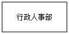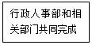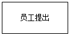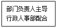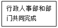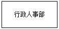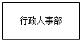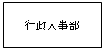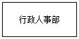
 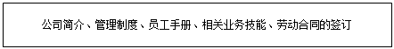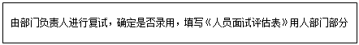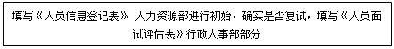
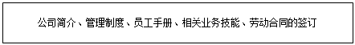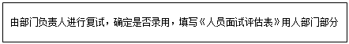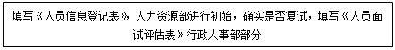 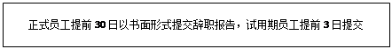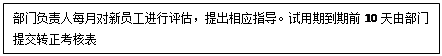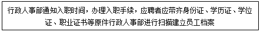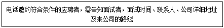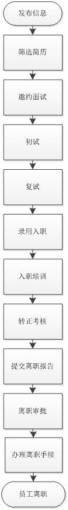
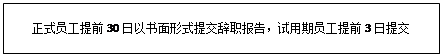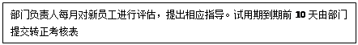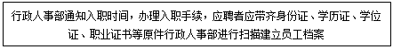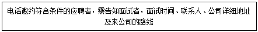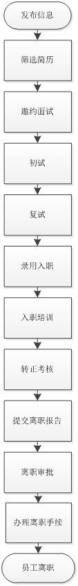
入、离职管理制度
总则
1、为进一步加强公司员工管理，规范招聘、录用、入职、试用期考核、内部岗位变动及员工离职程序，结合公司实际制订本标准。
2、本制度适用于公司全体员工。
招聘制度
3、用人需求部门根据本部门发展的需要，结合部门人员编制提出年度用人计划，填写用人需求表送行政人事部。
4、行政人事部根据企业战略发展规划，结合各部门的用人需求，编制企业年度人才需求计划，报总经理审批后实施。
5、对于非编制外的招聘，由需求部门填写用人申请，报总经理审批后送行政人事部实施。
6、行政人事部根据经总经理批准后的人才需求计划或用人申请，向外发布招聘信息。
7、招聘信息发布后，行政人事部依据报名条件规定收集报名资料，并进行初步筛选，审核应聘人员资格与招聘要求是否符合以及提供材料的可靠性。
8、行政人事部根据审核筛选，确定初试人员名单和面试时间，并进行初试，并填写《面试评价表》。对合格者推荐到需求部门及有关人员对应聘人员进行复试。
9、所有应聘人员面试结束后，行政人事部会同需求部门确定最终面试结果。
10、行政人事部将应聘人员的最终面试结果报总经理审批，确定最终录用人员。
11、对于被公司确定正式聘用的求职者，由行政人事部通知被录用人携带有关证件来公司报到。被录用人应按行政人事部指定时间报到及办理入职手续。
12、新员工报到时须向行政人事部提供以下有关证明文件：本人身份证、最高学历证明、职称证明、技术等级证明、前工作单位离职证明等原件。
13、新员工交付有关证明文件由行政人事部负责制作成电子档。
14、新员工入职须签写《入职须知》，连同经过公司领导审核批准的《应聘人员登记表》一起交由行政人事部建立个人档案。
15、行政人事部为新员工配发办公用品和工作服。
16、行政人事部将新入职人员的工资待遇告知给财务部，作为计发工资的依据。
17、考勤记录从新员工正式报到之日起开始。
新员工入职培训
18、由行政人事部通知用人部门做好相应的工作安排。新员工第一天到岗，部门负责人应负责将新员工介绍给公司同事，并作相关的入职培训。
19、行政人事部组织新员工进行职前培训。培训内容：公司历史、行业前景、产品介绍、公司文化、管理制度及职业规划等。部门负责人对新员进行业务技能上的培训，做好新员工的管理。
20、试用期期限原则为三个月。员工入职两个月后部门负责人和行政人事部应对员工进行评定，了解员工工作情况，减少员工不合格率。
21、试用期满前或员工提出转正后部门负责人将根据新员工的工作态度、工作能力、学习能力、学习成绩、协作能力等项目进行综合考评并填写《试用人员鉴定表》。行政人事部将根据新员工的出勤情况、日常表现、培训考核等项目进行综合考评，考核合格行政人事部将按公司规定给予转正并签订劳动合同（首次签订劳动合同期限为3年）。不合格者不予录用。
内部岗位变动
22、公司可更具需要随时调动员工工作岗位，员工也可以根据发展需要自己申请变动工作岗位没。员工申请变动工作岗位需转正后在原岗位工作满半年，且各方面达到申请岗位的要求，经考核合格后可办理变动手续。
员工离职
23、辞职员工需在离职前一个月提交《辞职书》，部门负责人同意签字后，交总经理审批。同意离职后约定时间进行工作交接。试用期员工或未签订劳动合同者离职申请应提前一周提交《辞职书》。
24、员工严重违反公司规章制度需要辞退的，应由行政人事部提交《辞退员工申请表》由总经理签字批准后，通知员工办理离职手续。
25、部分负责人认为员工不胜任岗位工作的，由部门领导填写《员工辞退申请表》，交行政人事部审查核准后报总经理批准后，通知员工办理离职手续并给予相应补偿。
25、离职员工应在《工作交接表》上详细列明工作交接的内容和物品交接的清单。离职人员办理移交时应由部门负责人指定接替人接收，如未指定接收人时应临时指定人员先行接收保管，待人选确定后再转交，如无人可派时，暂由主管领导自行接收。交接过程中如有不合之处，应予及时处理更正。如离职员工正式离职后，再发现财物或资料不合的，应由该部门领导负责追索。
26、员工交接完毕后，行政人事部办理离职手续，开具《解除劳动合同书》完成离职流程。
27、员工离职后行政人事部应及时停、退社会保险。
28、离职人员工资等在固定发薪日进行发放。
人员入离流程说明
|
流程 |
说明 |
执行部门 |
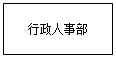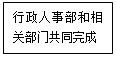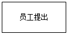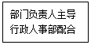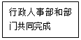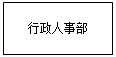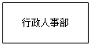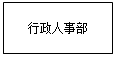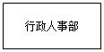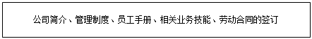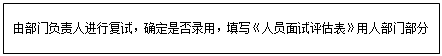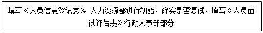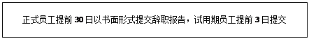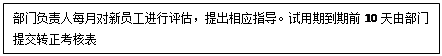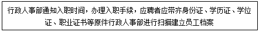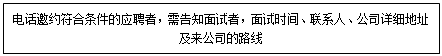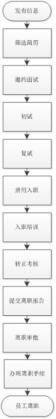